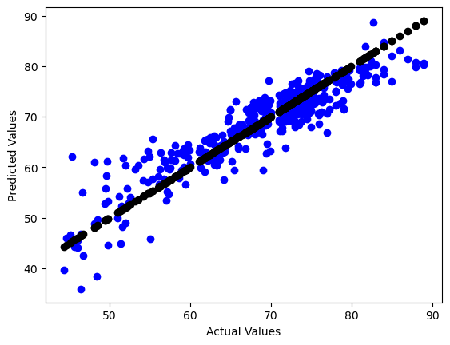
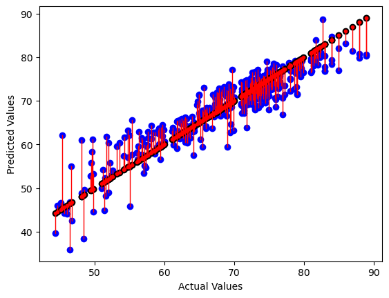
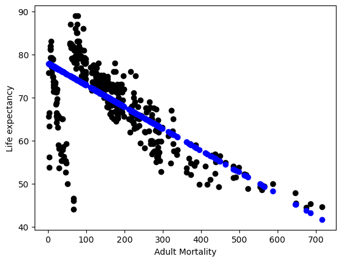
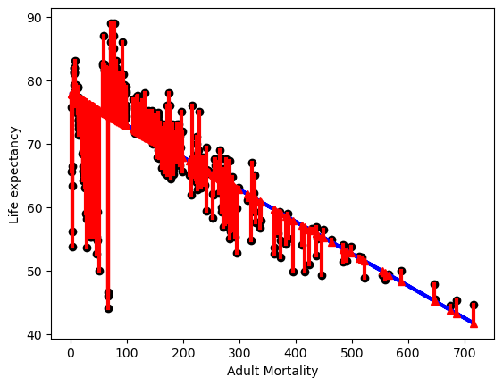

Regression and Optimization#
In this project we had to find a dataset suitible for linear regression. Through testing, fitting, and optimizing models we needed to Interpret the model and its performance in terms of the application.
# basic libraries
import numpy as np
import pandas as pd
import seaborn as sns
import matplotlib.pyplot as plt
# models classes
from sklearn import tree
from sklearn.tree import DecisionTreeRegressor
from sklearn import cluster
from sklearn import svm
# datasets
from sklearn import datasets, linear_model
# model selection tools
from sklearn.model_selection import GridSearchCV
from sklearn.model_selection import cross_val_score
from sklearn.model_selection import train_test_split
from sklearn.model_selection import KFold, ShuffleSplit
from sklearn import metrics
from sklearn.metrics import mean_squared_error, r2_score
Description:#
This Dataset contains statistics from 2000 to 2015 across 193 countries, and contains health and economic data from the WHO and UN. There are 2938 rows with 22 columns with features that include the country and year collected along side metrics that show adult mortality rates, infant deaths, education, various reported disease numbers/metrics, population, and more. In this prediction task Ill be attempting is to determine Life expectancy based off of Adult mortality rate and other features. Ill remove some non contiguous features such as country, year, and status since they are not contiguous. Linear regression is a good choice for targeting Life Expectancy since these features, specifically things like Adult Mortality and Schooling, should intuitively increase or decrease alongside it.
lifeExp_df = pd.read_csv('LifeExpectancyData.csv')
lifeExp_df.head()
| Country | Year | Status | Life expectancy | Adult Mortality | infant deaths | Alcohol | percentage expenditure | Hepatitis B | Measles | ... | Polio | Total expenditure | Diphtheria | HIV/AIDS | GDP | Population | thinness 1-19 years | thinness 5-9 years | Income composition of resources | Schooling | |
|---|---|---|---|---|---|---|---|---|---|---|---|---|---|---|---|---|---|---|---|---|---|
| 0 | Afghanistan | 2015 | Developing | 65.0 | 263.0 | 62 | 0.01 | 71.279624 | 65.0 | 1154 | ... | 6.0 | 8.16 | 65.0 | 0.1 | 584.259210 | 33736494.0 | 17.2 | 17.3 | 0.479 | 10.1 |
| 1 | Afghanistan | 2014 | Developing | 59.9 | 271.0 | 64 | 0.01 | 73.523582 | 62.0 | 492 | ... | 58.0 | 8.18 | 62.0 | 0.1 | 612.696514 | 327582.0 | 17.5 | 17.5 | 0.476 | 10.0 |
| 2 | Afghanistan | 2013 | Developing | 59.9 | 268.0 | 66 | 0.01 | 73.219243 | 64.0 | 430 | ... | 62.0 | 8.13 | 64.0 | 0.1 | 631.744976 | 31731688.0 | 17.7 | 17.7 | 0.470 | 9.9 |
| 3 | Afghanistan | 2012 | Developing | 59.5 | 272.0 | 69 | 0.01 | 78.184215 | 67.0 | 2787 | ... | 67.0 | 8.52 | 67.0 | 0.1 | 669.959000 | 3696958.0 | 17.9 | 18.0 | 0.463 | 9.8 |
| 4 | Afghanistan | 2011 | Developing | 59.2 | 275.0 | 71 | 0.01 | 7.097109 | 68.0 | 3013 | ... | 68.0 | 7.87 | 68.0 | 0.1 | 63.537231 | 2978599.0 | 18.2 | 18.2 | 0.454 | 9.5 |
5 rows × 22 columns
Cleaning:#
lifeExp_df.columns
Index(['Country', 'Year', 'Status', 'Life expectancy ', 'Adult Mortality',
'infant deaths', 'Alcohol', 'percentage expenditure', 'Hepatitis B',
'Measles ', ' BMI ', 'under-five deaths ', 'Polio', 'Total expenditure',
'Diphtheria ', ' HIV/AIDS', 'GDP', 'Population',
' thinness 1-19 years', ' thinness 5-9 years',
'Income composition of resources', 'Schooling'],
dtype='object')
lifeExp_df = lifeExp_df.rename(columns={'Life expectancy ': 'Life expectancy'})
lifeExp_df.shape
(2938, 22)
lifeExp_df['Life expectancy'].describe()
count 2928.000000
mean 69.224932
std 9.523867
min 36.300000
25% 63.100000
50% 72.100000
75% 75.700000
max 89.000000
Name: Life expectancy, dtype: float64
lifeExp_clean = lifeExp_df.drop(columns=['Year','Country', 'Status'])
lifeExp_clean.head(1)
| Life expectancy | Adult Mortality | infant deaths | Alcohol | percentage expenditure | Hepatitis B | Measles | BMI | under-five deaths | Polio | Total expenditure | Diphtheria | HIV/AIDS | GDP | Population | thinness 1-19 years | thinness 5-9 years | Income composition of resources | Schooling | |
|---|---|---|---|---|---|---|---|---|---|---|---|---|---|---|---|---|---|---|---|
| 0 | 65.0 | 263.0 | 62 | 0.01 | 71.279624 | 65.0 | 1154 | 19.1 | 83 | 6.0 | 8.16 | 65.0 | 0.1 | 584.25921 | 33736494.0 | 17.2 | 17.3 | 0.479 | 10.1 |
lifeExp_clean.shape
(2938, 19)
lifeExp_clean = lifeExp_clean.dropna()
lifeExp_clean.shape
(1649, 19)
Instantiate/fit:#
lifeExp_allFeat_X = lifeExp_clean.drop(columns=['Life expectancy'])
lifeExp_target_y = lifeExp_clean['Life expectancy']
X_train, X_test, y_train, y_test = train_test_split(lifeExp_allFeat_X, lifeExp_target_y, test_size=0.25)
lifeExp_reg = linear_model.LinearRegression()
lifeExp_reg.fit(X_train, y_train)
LinearRegression()In a Jupyter environment, please rerun this cell to show the HTML representation or trust the notebook.
On GitHub, the HTML representation is unable to render, please try loading this page with nbviewer.org.
LinearRegression()
y_pred = lifeExp_reg.predict(X_test)
plt.scatter(y_test, y_pred, color='blue') #Pred
plt.scatter(y_test, y_test, color='black') #Actual
plt.xlabel("Actual Values")
plt.ylabel("Predicted Values")
Text(0, 0.5, 'Predicted Values')

r2_score(y_test,y_pred)
0.8373483396212271
mean_abs_error = np.sqrt(mean_squared_error(y_test,y_pred))
mean_abs_error
3.659670213439647
Test on 25% held out test data#
The r2_score shows an 82% accuracy score which is close to 1, showing a very good variance and good fit to the model. The mean_abs_error shows the models predictions tend to be 3.7 years off from the true correct values, this again shows the model is fit well. The line plot above also is a good visual showing the model is finding the general trend of life expectancy correctly.
# draw vertical lines from each data point to its predict value
[plt.plot([yt, yt], [yt, yp], color='red', linewidth=1, markevery=[0], marker ='.')
for yp, yt in zip(y_pred,y_test)];
# plot these last so they are visually on top
plt.scatter(y_test, y_pred, color='blue')
plt.scatter(y_test, y_test, color='black')
plt.xlabel("Actual Values")
plt.ylabel("Predicted Values")
Text(0, 0.5, 'Predicted Values')

lifeExp_reg.coef_
array([-1.60815216e-02, 1.00404499e-01, -6.42892162e-02, 3.05878087e-04,
-6.51225345e-03, -4.00758558e-06, 3.01255941e-02, -7.61223293e-02,
7.78260211e-03, 1.33933106e-01, 1.90298753e-02, -4.57770510e-01,
2.21243401e-05, 4.21432307e-10, -3.29351695e-02, -4.88844146e-02,
8.90015376e+00, 8.79985746e-01])
Coefficients and Residuals#
The positive coefficients are showing features that increase the life expectancy while the negatives are doing the opposite. We can also see which features are contributing the most to determining the models predictions by how close they are to zero. I f we match up the index’s to the cols in the clean_df the first number should be Adult Mortality and the second is infant deaths, since infant deaths is a tangible number and not a rate it makes sense it would have a higher effect on predicting Life expectancy since infants would generally be around the age of 1-3.
Repeat the split, train, and test steps 5 times#
r2_cva = cross_val_score(lifeExp_reg, lifeExp_allFeat_X, lifeExp_target_y)
r2_cva
array([0.83532928, 0.77805879, 0.83898485, 0.70770205, 0.78634137])
np.mean(r2_cva)
0.7892832697235778
Using Kfold method we see that there can be a possibility of a lower score, specifiacally we can see a lower score of 70.7%. We have an average around 78%, this is still a high enough score to make me trust the model.
Interpret the model and its performance in terms of the application#
I think in general this model shows there is a trend fairly well, I personally don’t think it would be good enough for real world use due to some of its lower splits being right at 70 and even at its highest being 83%. Sure we can see a trend of life expectancy going up but the information from the graphs and scores don’t really tell us why they go up just only that they can go up. It would be more useful to try linear regression on individual statistics to find specific trends rather than a general one. We can however learn from these statistics that there is a way to increase mortality rate we just now need to dig deeper with a more complex model, as I do believe machine learning can help us with these types of statistics.
Testing on One Feature#
Logically adult mortality seemed linked to life expectancy, where a higher mortality rate would lead to a lower Life expectancy so I wanted to see if the model/data reflected this idea. Looking at lifeExp_reg.coef_ Adult Mortality got a score close to zero around -1 meaning it has lesser effect on the model so I wanted to see why. After Using this one feature It seems like the line like figure shown in the plot below might have to do with its low score prevoiusly. A coefficient of “-0.04908872” shows us as Adult Mortality increases life expectancy decreases. This makes sense, if people are dying sooner than mortality rates should rise. The residuals in the start of the plot show a huge discrepancy, with such a low mortality rate we also have some extremely low life expectancy ages. This could mean some other demographic data was causing a lower age expectancy in specific countries or other historical factors.
lifeExp_X1 = lifeExp_clean['Adult Mortality'].values[:,np.newaxis]
lifeExp_X1.shape
(1649, 1)
lifeExp_y1 = lifeExp_clean['Life expectancy']
lifeExp_y1.shape
(1649,)
X1_train, X1_test, y1_train, y1_test = train_test_split(lifeExp_X1, lifeExp_y1, test_size=0.25)
lifeExp_reg1 = linear_model.LinearRegression()
lifeExp_reg1.fit(X1_train, y1_train)
LinearRegression()In a Jupyter environment, please rerun this cell to show the HTML representation or trust the notebook.
On GitHub, the HTML representation is unable to render, please try loading this page with nbviewer.org.
LinearRegression()
lifeExp_reg1.coef_
array([-0.05063989])
y1_pred = lifeExp_reg1.predict(X1_test)
plt.scatter(X1_test, y1_test, color = 'black') #Actual Data
plt.scatter(X1_test, y1_pred, color='blue') #Prediction
plt.xlabel("Adult Mortality")
plt.ylabel("Life expectancy")
Text(0, 0.5, 'Life expectancy')

r2_score(y1_test,y1_pred)
0.42099041138443094
mean_abs_error1 = np.sqrt(mean_squared_error(y1_test,y1_pred))
mean_abs_error1
6.983226243958276
Test on 25% held out test data and measure the fit with two metrics and one plot#
The r2 score is low which probably has to do with the large line like figure in the actual data at the start of the plot. The mean_abs_error shows that on average the model’s prediction is about six and a half years off for life expectancy.
# plot line prediction
plt.plot(X1_test, y1_pred, color='blue', linewidth=3);
# draw vertical lines from each data point to its predict value
[plt.plot([x,x],[yp,yt], color='red', linewidth=3, markevery=[0], marker ='^')
for x, yp, yt in zip(X1_test, y1_pred,y1_test)];
# plot these last so they are visually on top
plt.scatter(X1_test,y1_test, color='black');
plt.xlabel("Adult Mortality")
plt.ylabel("Life expectancy")
Text(0, 0.5, 'Life expectancy')

Optimizing a more complex regression model#
Instantiate, Fit, and Score#
dt = tree.DecisionTreeRegressor()
dt.fit(X_train, y_train)
DecisionTreeRegressor()In a Jupyter environment, please rerun this cell to show the HTML representation or trust the notebook.
On GitHub, the HTML representation is unable to render, please try loading this page with nbviewer.org.
DecisionTreeRegressor()
dt.score(X_train, y_train)
1.0
params_dt = {'criterion' : ['squared_error', 'friedman_mse', 'absolute_error', 'poisson'],'max_depth': [2,5,10,20],'min_samples_split': [2,5,10,20], 'min_samples_leaf': [2,5,10,20]}
dt_opt = GridSearchCV(dt,params_dt)
dt_opt.fit(X_train, y_train)
GridSearchCV(estimator=DecisionTreeRegressor(max_depth=5, min_samples_leaf=5,min_samples_split=10), param_grid={'criterion': ['squared_error', 'friedman_mse', 'absolute_error', 'poisson'], 'max_depth': [2, 5, 10, 20], 'min_samples_leaf': [2, 5, 10, 20], 'min_samples_split': [2, 5, 10, 20]})</pre><b>In a Jupyter environment, please rerun this cell to show the HTML representation or trust the notebook. <br />On GitHub, the HTML representation is unable to render, please try loading this page with nbviewer.org.</b></div><div class="sk-container" hidden><div class="sk-item sk-dashed-wrapped"><div class="sk-label-container"><div class="sk-label fitted sk-toggleable"><input class="sk-toggleable__control sk-hidden--visually" id="sk-estimator-id-26" type="checkbox" ><label for="sk-estimator-id-26" class="sk-toggleable__label fitted sk-toggleable__label-arrow fitted"> GridSearchCV<a class="sk-estimator-doc-link fitted" rel="noreferrer" target="_blank" href="https://scikit-learn.org/1.4/modules/generated/sklearn.model_selection.GridSearchCV.html">?<span>Documentation for GridSearchCV</span></a><span class="sk-estimator-doc-link fitted">i<span>Fitted</span></span></label><div class="sk-toggleable__content fitted"><pre>GridSearchCV(estimator=DecisionTreeRegressor(max_depth=5, min_samples_leaf=5, min_samples_split=10), param_grid={'criterion': ['squared_error', 'friedman_mse', 'absolute_error', 'poisson'], 'max_depth': [2, 5, 10, 20], 'min_samples_leaf': [2, 5, 10, 20], 'min_samples_split': [2, 5, 10, 20]})</pre></div> </div></div><div class="sk-parallel"><div class="sk-parallel-item"><div class="sk-item"><div class="sk-label-container"><div class="sk-label fitted sk-toggleable"><input class="sk-toggleable__control sk-hidden--visually" id="sk-estimator-id-27" type="checkbox" ><label for="sk-estimator-id-27" class="sk-toggleable__label fitted sk-toggleable__label-arrow fitted">estimator: DecisionTreeRegressor</label><div class="sk-toggleable__content fitted"><pre>DecisionTreeRegressor(max_depth=5, min_samples_leaf=5, min_samples_split=10)</pre></div> </div></div><div class="sk-serial"><div class="sk-item"><div class="sk-estimator fitted sk-toggleable"><input class="sk-toggleable__control sk-hidden--visually" id="sk-estimator-id-28" type="checkbox" ><label for="sk-estimator-id-28" class="sk-toggleable__label fitted sk-toggleable__label-arrow fitted"> DecisionTreeRegressor<a class="sk-estimator-doc-link fitted" rel="noreferrer" target="_blank" href="https://scikit-learn.org/1.4/modules/generated/sklearn.tree.DecisionTreeRegressor.html">?<span>Documentation for DecisionTreeRegressor</span></a></label><div class="sk-toggleable__content fitted"><pre>DecisionTreeRegressor(max_depth=5, min_samples_leaf=5, min_samples_split=10)</pre></div> </div></div></div></div></div></div></div></div></div>dt_opt.score(X_train, y_train)0.9772450825467713dt_opt.best_params_{'criterion': 'poisson', 'max_depth': 20, 'min_samples_leaf': 5, 'min_samples_split': 10}Examining the best fit model vs the Origninal#
The grid search determined poisson max_depth=20, min_samples_leaf=5, min_samples_split=10 while the default would have been squared_error, max_depth=None, min_samples_leaf=1, min_samples_split=2. Doing this has given a proper score where the default was giving a perfect 1 which points to over fitting. Ive changed max_depth to try higher numbers and seems to always pick the larger number. After 70 the it takes to long to compute and times out, the more depth available the more accurate the score will be. It also picks Poisson over squared_error, looking at the time it takes to fit/score poisson takes much less time. When I did a 10 fold on the data it showed almost the same exact score which means its a stable and not over fitting data.
dt_5cv_df = pd.DataFrame(dt_opt.cv_results_) dt_5cv_df
mean_fit_time std_fit_time mean_score_time std_score_time param_criterion param_max_depth param_min_samples_leaf param_min_samples_split params split0_test_score split1_test_score split2_test_score split3_test_score split4_test_score mean_test_score std_test_score rank_test_score 0 0.005177 0.004539 0.002995 0.004118 squared_error 2 2 2 {'criterion': 'squared_error', 'max_depth': 2,... 0.753203 0.722127 0.759607 0.718842 0.688256 0.728407 0.025812 196 1 0.003815 0.004433 0.003431 0.003555 squared_error 2 2 5 {'criterion': 'squared_error', 'max_depth': 2,... 0.753203 0.722127 0.759607 0.718842 0.688256 0.728407 0.025812 196 2 0.005172 0.003385 0.000000 0.000000 squared_error 2 2 10 {'criterion': 'squared_error', 'max_depth': 2,... 0.753203 0.722127 0.759607 0.718842 0.688256 0.728407 0.025812 223 3 0.004086 0.005005 0.002006 0.004013 squared_error 2 2 20 {'criterion': 'squared_error', 'max_depth': 2,... 0.753203 0.722127 0.759607 0.718842 0.688256 0.728407 0.025812 196 4 0.004460 0.003937 0.001391 0.000695 squared_error 2 5 2 {'criterion': 'squared_error', 'max_depth': 2,... 0.753203 0.722127 0.759607 0.718842 0.688256 0.728407 0.025812 196 ... ... ... ... ... ... ... ... ... ... ... ... ... ... ... ... ... ... 251 0.009104 0.001611 0.000820 0.001641 poisson 20 10 20 {'criterion': 'poisson', 'max_depth': 20, 'min... 0.919820 0.893255 0.898688 0.912637 0.905190 0.905918 0.009503 39 252 0.008193 0.000048 0.000000 0.000000 poisson 20 20 2 {'criterion': 'poisson', 'max_depth': 20, 'min... 0.913402 0.882487 0.894023 0.912446 0.874443 0.895360 0.015636 92 253 0.007534 0.001742 0.001531 0.001881 poisson 20 20 5 {'criterion': 'poisson', 'max_depth': 20, 'min... 0.913402 0.882487 0.894023 0.912446 0.874443 0.895360 0.015636 94 254 0.008284 0.000119 0.000814 0.001628 poisson 20 20 10 {'criterion': 'poisson', 'max_depth': 20, 'min... 0.913402 0.882487 0.894023 0.912446 0.874443 0.895360 0.015636 92 255 0.007509 0.001728 0.000880 0.001760 poisson 20 20 20 {'criterion': 'poisson', 'max_depth': 20, 'min... 0.913402 0.882487 0.894514 0.912446 0.874443 0.895458 0.015629 90 256 rows × 17 columns
More Folds#
dt_opt_10F = GridSearchCV(dt,params_dt, cv=10) dt_opt_10F.fit(X_train, y_train)GridSearchCV(cv=10, estimator=DecisionTreeRegressor(),param_grid={'criterion': ['squared_error', 'friedman_mse', 'absolute_error', 'poisson'], 'max_depth': [2, 5, 10, 20], 'min_samples_leaf': [2, 5, 10, 20], 'min_samples_split': [2, 5, 10, 20]})</pre><b>In a Jupyter environment, please rerun this cell to show the HTML representation or trust the notebook. <br />On GitHub, the HTML representation is unable to render, please try loading this page with nbviewer.org.</b></div><div class="sk-container" hidden><div class="sk-item sk-dashed-wrapped"><div class="sk-label-container"><div class="sk-label fitted sk-toggleable"><input class="sk-toggleable__control sk-hidden--visually" id="sk-estimator-id-33" type="checkbox" ><label for="sk-estimator-id-33" class="sk-toggleable__label fitted sk-toggleable__label-arrow fitted"> GridSearchCV<a class="sk-estimator-doc-link fitted" rel="noreferrer" target="_blank" href="https://scikit-learn.org/1.4/modules/generated/sklearn.model_selection.GridSearchCV.html">?<span>Documentation for GridSearchCV</span></a><span class="sk-estimator-doc-link fitted">i<span>Fitted</span></span></label><div class="sk-toggleable__content fitted"><pre>GridSearchCV(cv=10, estimator=DecisionTreeRegressor(), param_grid={'criterion': ['squared_error', 'friedman_mse', 'absolute_error', 'poisson'], 'max_depth': [2, 5, 10, 20], 'min_samples_leaf': [2, 5, 10, 20], 'min_samples_split': [2, 5, 10, 20]})</pre></div> </div></div><div class="sk-parallel"><div class="sk-parallel-item"><div class="sk-item"><div class="sk-label-container"><div class="sk-label fitted sk-toggleable"><input class="sk-toggleable__control sk-hidden--visually" id="sk-estimator-id-34" type="checkbox" ><label for="sk-estimator-id-34" class="sk-toggleable__label fitted sk-toggleable__label-arrow fitted">estimator: DecisionTreeRegressor</label><div class="sk-toggleable__content fitted"><pre>DecisionTreeRegressor()</pre></div> </div></div><div class="sk-serial"><div class="sk-item"><div class="sk-estimator fitted sk-toggleable"><input class="sk-toggleable__control sk-hidden--visually" id="sk-estimator-id-35" type="checkbox" ><label for="sk-estimator-id-35" class="sk-toggleable__label fitted sk-toggleable__label-arrow fitted"> DecisionTreeRegressor<a class="sk-estimator-doc-link fitted" rel="noreferrer" target="_blank" href="https://scikit-learn.org/1.4/modules/generated/sklearn.tree.DecisionTreeRegressor.html">?<span>Documentation for DecisionTreeRegressor</span></a></label><div class="sk-toggleable__content fitted"><pre>DecisionTreeRegressor()</pre></div> </div></div></div></div></div></div></div></div></div>dt_opt_10F.score(X_train, y_train)0.9726365933735092